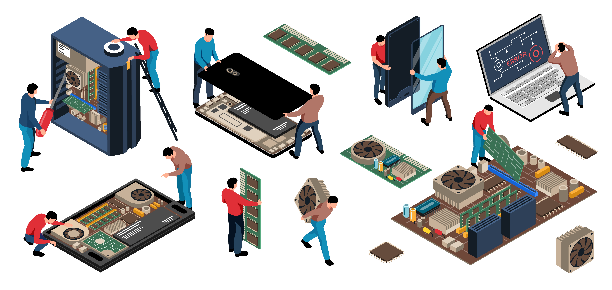

Mantén tus equipos funcionando como nuevos con nuestros servicios especializados de reparación de computadores. Nos dedicamos a diagnosticar y solucionar cualquier problema técnico que puedas enfrentar, garantizando que tu equipo esté en las mejores condiciones posibles. Desde fallos de hardware hasta problemas de software, nuestro equipo de expertos está listo para ayudarte a restaurar la funcionalidad completa de tus dispositivos.

En el mundo actual, donde dependemos cada vez más de la tecnología para nuestras actividades diarias, es crucial contar con un equipo de cómputo que funcione de manera óptima. Entendemos que cuando algo falla, puede afectar significativamente tu productividad y causar molestias. Por eso, ofrecemos un servicio integral de reparación de computadores, diseñado para resolver cualquier inconveniente de manera rápida y eficiente.